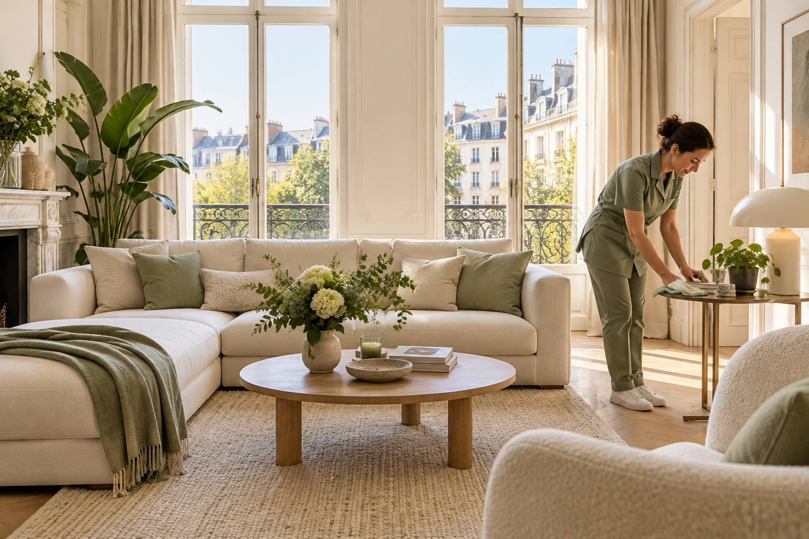

À proposProches de vous.
Proches de vous.
Attentifs à vos espaces.
Blessings Cleaning accompagne le quotidien des particuliers à Bruxelles. Cette nouvelle présentation ouvre aussi la voie à une offre pour les professionnels.

Notre approcheDu temps pour ce
Du temps pour ce
qui compte vraiment.
Garder un intérieur agréable demande de l’attention. Entre le travail, les déplacements et la famille, un peu d’aide peut changer le quotidien.
Notre démarche commence par une conversation : comprendre vos habitudes, identifier vos priorités et convenir d’une organisation adaptée.
Retrouvez-nous à Bruxelles et à Forest pour parler de votre besoin, à domicile ou dans vos locaux.
Rencontrons-nousCommençons par un échange
Parlons de votre projetEt si on vous simplifiait la vie ?
À la maison ou au bureau, trouvons la formule qui vous convient.